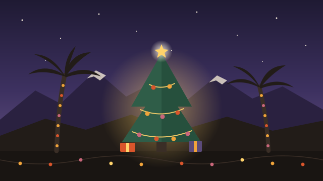

Holiday Events in the Coachella Valley.
The big three this season: the Palm Springs Festival of Lights Parade on Saturday, Dec 5 (free), WildLights at The Living Desert on select nights Nov 24 to Dec 30, and the Magic of Lights drive-through in Indio every night Nov 20 to Jan 2. Below are those three, every town’s tree lighting and the rest of the calendar.

Light shows and the parade
Palm Springs Festival of Lights Parade
- Starts
- 5:45 PM, runs 90 minutes to 2 hours
- Route
- North on Palm Canyon Dr, from Ramon Rd to Tachevah Rd
- Cost
- Free, no tickets
About 80 entries: lighted floats, marching bands, drill teams and giant balloons. Palm Canyon closes to cars at 3 PM. Come an hour early, bring chairs and a blanket (none are provided), and note that alcohol isn’t allowed. Park on nearby streets, in the garage off Tahquitz Canyon or in the Museum garage. The accessible viewing area is at Amado Rd, on the east side.
WildLights at The Living Desert
- Hours
- 6 to 9 PM, last entry 8:30
- Where
- 47900 Portola Ave, Palm Desert
- Tickets
- $25 adults, $20 kids 3–17, under 3 free
A walk through the zoo lit up for the season. Open Nov 24, 25, 27 and 28; Dec 4, 5, 10 to 12, 17 to 24 and 26 to 30. Special nights: Jingle Pups dog night (Dec 10), adults only (Dec 17) and Pride Night (Dec 18). Santa is there through Dec 24, and the Grinch takes over Dec 26 to 30. Closed Christmas Day. Book ahead, because each night has a cap.
Magic of Lights Coachella Valley
- Hours
- 5:30 to 9 PM Sun–Thu, until 10 PM Fri–Sat
- Where
- Empire Polo Club, 81-800 51st Ave, Indio
- Cost
- Per car: $26.99 in November, $89.99 season pass
A drive-through light show, so you stay warm in the car and nobody has to walk. November is the cheapest time to go.
Tree lightings, town by town
None of the towns have posted 2026 dates yet. Here’s where each one held it last year and when, so you know roughly when to expect it. We fill in each date as soon as it’s announced.
| Town | Where | Last year (2025) | 2026 |
|---|---|---|---|
| Palm Desert | The Shops on El Paseo, at Ocotillo and El Paseo | Sat, Nov 22, 4 to 6 PM (tree lit at 6) | Not announced yet |
| Coachella | In front of City Hall, downtown | Wed, Dec 3, 5:30 PM | Not announced yet |
| Palm Springs | Frances Stevens Park | Fri, Dec 5, 4 to 6 PM | Not announced yet |
| Indio | Downtown Indio | Fri, Dec 5, 5 to 10 PM, with food trucks and a kid zone | Not announced yet |
| Cathedral City | City Hall (Tree Lighting & Snow Fest) | Sat, Dec 13, 4 to 8 PM (tree lit at 7) | Not announced yet |
| La Quinta | Civic Center Park | Early December, in the evening | Not announced yet |
Holiday calendar
Holidays in the Coachella Valley: quick answers
When is the Palm Springs Festival of Lights Parade in 2026?
Saturday, December 5, 2026, starting at 5:45 PM. It heads north on Palm Canyon Drive from Ramon Road to Tachevah Road and runs 90 minutes to 2 hours. It's free, with no tickets. Palm Canyon Drive closes at 3 PM, so arrive at least an hour early, bring your own chairs and a warm layer, and leave the alcohol at home.
Where can I see Christmas lights in the Coachella Valley?
The two big light shows are WildLights at The Living Desert in Palm Desert, a walk-through on select nights Nov 24 to Dec 30 from 6 to 9 PM, and Magic of Lights at the Empire Polo Club in Indio, a drive-through every night Nov 20 to Jan 2. The Festival of Lights Parade in Palm Springs on Dec 5 is the big free one.
How much are WildLights tickets?
$25 for adults, $23 for Living Desert members, $20 for kids 3 to 17, and free under 3. Tickets are for one date, they aren't refundable, and each night has limited capacity, so book ahead. The zoo is closed Christmas Day.
How much is Magic of Lights Coachella Valley?
It's priced per car, not per person: $26.99 for any night in November, or $89.99 for a season pass good through Jan 2. Hours are 5:30 to 9 PM Sunday to Thursday and 5:30 to 10 PM Friday and Saturday.
When are the tree lightings in the Coachella Valley?
Most towns light their trees between the weekend before Thanksgiving and mid-December. Last year The Shops on El Paseo went first (Nov 22), then Coachella (Dec 3), Palm Springs and Indio (Dec 5) and Cathedral City (Dec 13). The 2026 dates aren't announced yet. We add each one here as the towns post it.
Is there a Thanksgiving turkey trot in the Coachella Valley?
Yes. Martha's Village & Kitchen's 20th annual Thanksgiving Day 5K starts at 8 AM on Thursday, Nov 26, on El Paseo in Palm Desert. Adults and kids can run or walk, and the money raised stays in the valley.
Dates, times and prices come from each organizer’s own website (checked November 1, 2026). Last year’s tree lighting details come from local news coverage. Things change, so check the event’s own page before you go. Hosting a holiday event that isn’t here? Add it free.